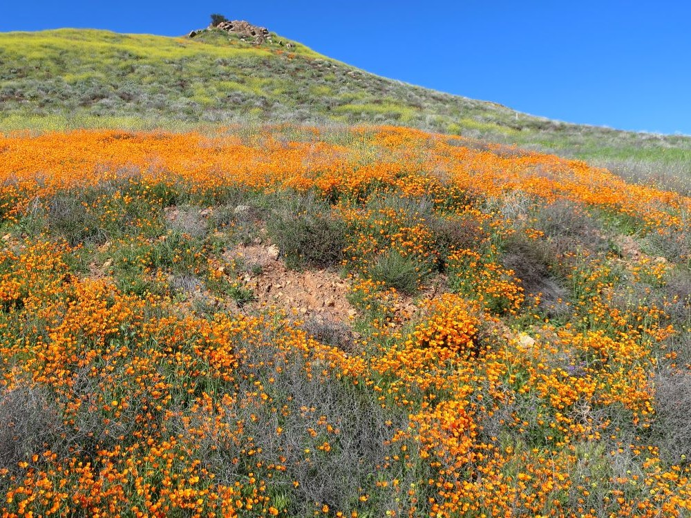
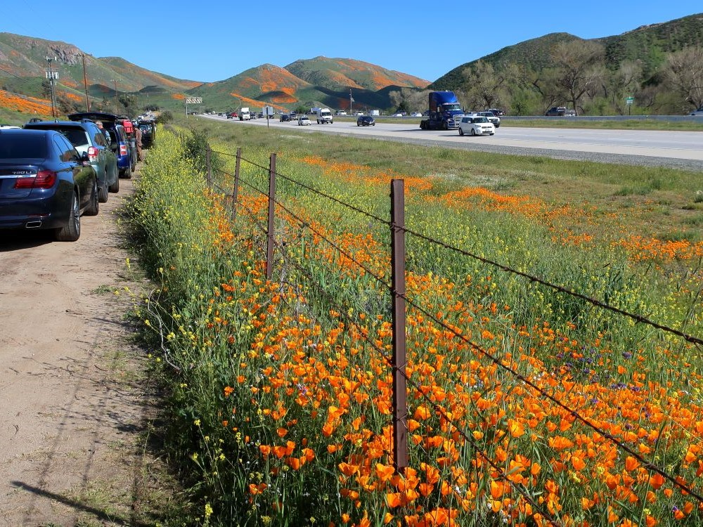
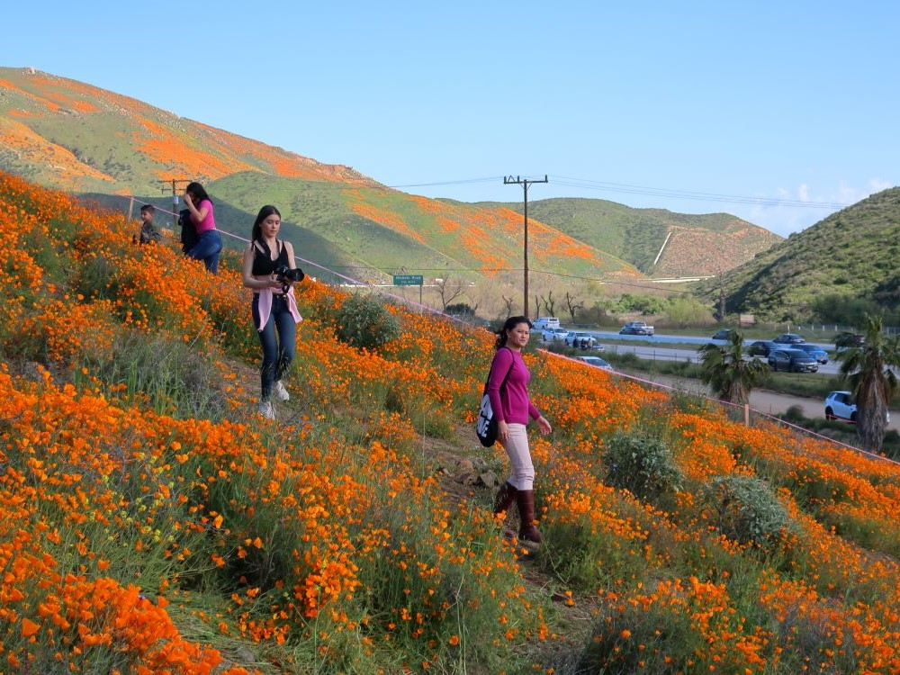
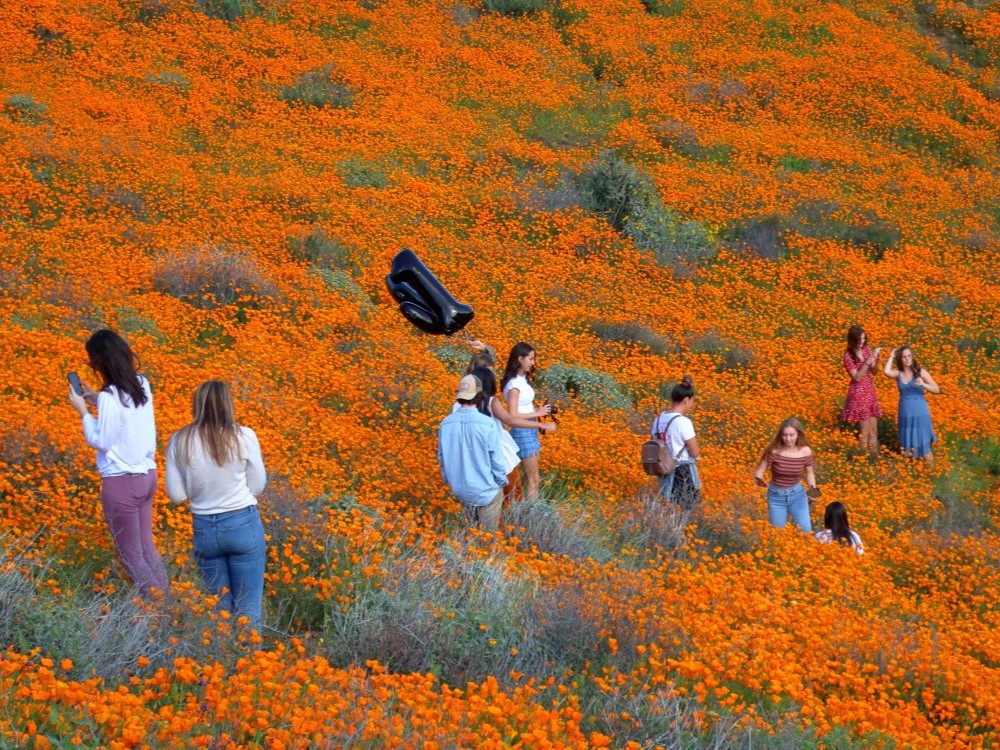
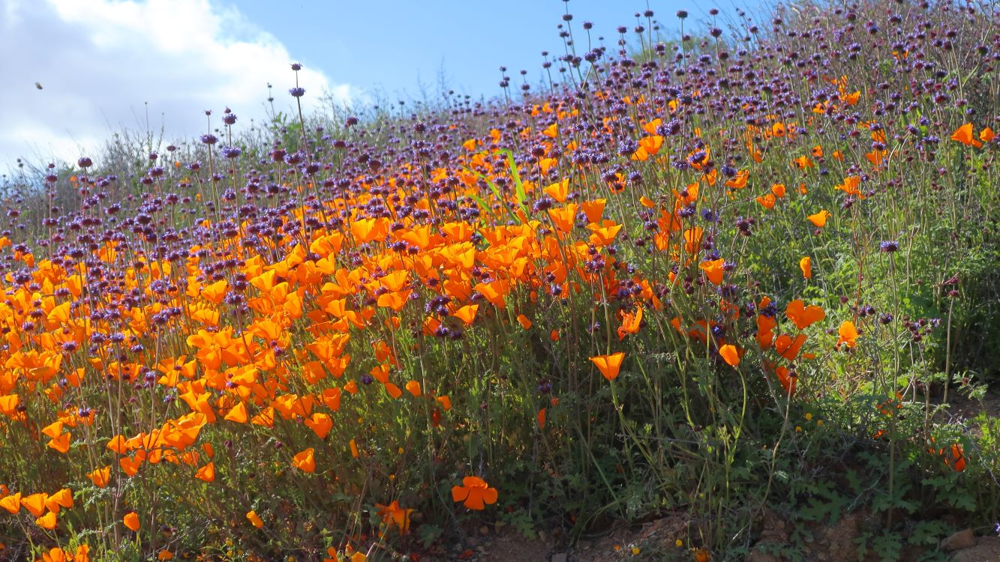
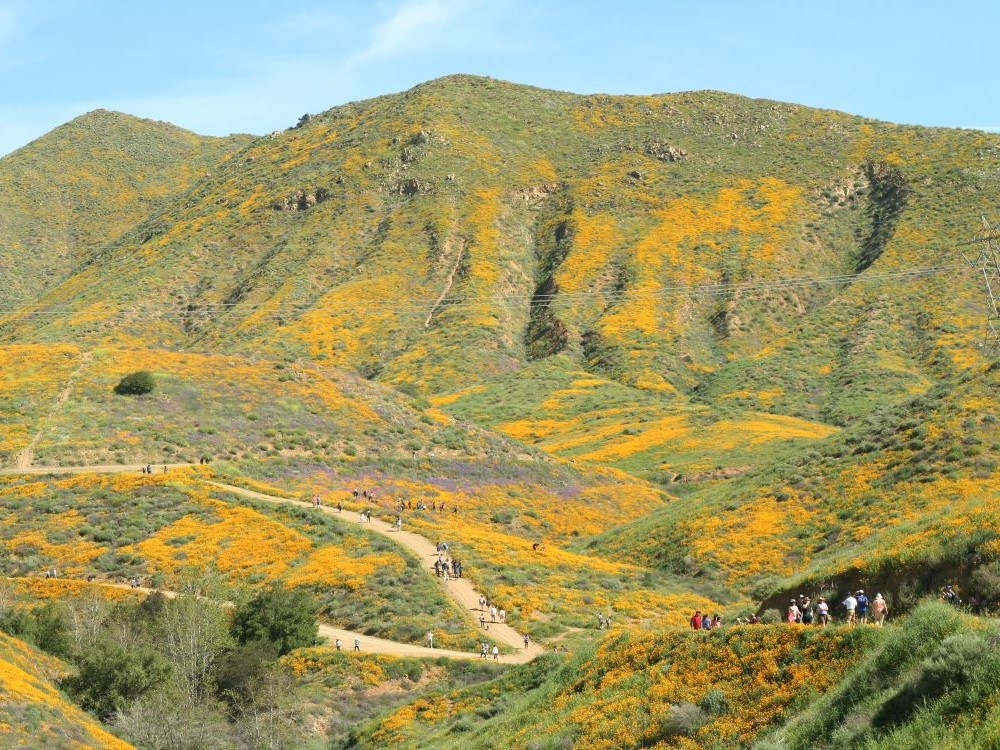

Expansive desert canyon featuring rugged trails, seasonal wildflower blooms, and diverse wildlife habitats ideal for hiking and nature observation.
General Information
Spring superbloom season may bring temporary closures or access restrictions
No permits required for hiking
How to Get There
From Los Angeles (70 mi): Take I-10 E to I-15 S toward San Diego, exit at Lake Street in Lake Elsinore, turn left onto Walker Canyon Rd and follow signs to the trailhead.
Overview
The Walker Canyon Ecological Reserve is a 490-acre haven of high desert sage-chaparral nestled in the Temescal Mountains of Riverside County. Known for its dramatic terrain and seasonal water flow, the canyon transforms each spring into a vibrant tapestry of California poppies during the famed superbloom. This natural spectacle draws thousands of visitors eager to witness the hillsides ablaze in orange and gold. The reserve offers hiking trails that wind through rocky outcrops and riparian habitats, providing opportunities for wildlife viewing and photography. Despite its popularity, the area maintains a rugged charm, with steep slopes and limited amenities encouraging a more immersive outdoor experience.
Managed by the California Department of Fish and Wildlife, Walker Canyon was designated an ecological reserve in 2000 to protect its unique flora and fauna. While the superbloom is its most celebrated feature, the canyon is open year-round for hiking, birdwatching, and seasonal hunting. Visitors are advised to bring plenty of water and wear appropriate gear, especially during the hot summer months when temperatures can soar above 100°F. With its blend of ecological significance and breathtaking beauty, Walker Canyon remains one of Southern California’s most captivating natural destinations.
Walker Canyon gained international attention during the famous 2019 "super bloom," when thousands of visitors came to see the hillsides covered in California poppies. While bloom intensity varies each year depending on rainfall and weather conditions, spring remains the most popular season to visit the canyon.
Enjoy Panoramic Mountain Views
Higher elevations along the trail provide views of Lake Elsinore, the Santa Ana Mountains, Mount San Jacinto, San Gorgonio Mountain, and surrounding Southern California landscapes. The viewpoints make Walker Canyon a popular destination for photographers and outdoor enthusiasts.
Enjoy a Year-Round Outdoor Escape
Although most famous for its spring wildflower displays, Walker Canyon remains open throughout the year for hiking, trail running, nature observation, and scenic walks. The trail network offers pleasant outdoor recreation even when wildflowers are not in bloom.
Visit During Sunrise or Golden Hour
Early morning and late afternoon provide the best lighting for photography and sightseeing. The soft light enhances the colors of the landscape while offering cooler temperatures and fewer crowds.
Top Trails
Walker Canyon Main Trail
Length: Approximately 3.5 miles round trip
Elevation Gain: Approximately 800 feet
Difficulty: Moderate
The primary route through Walker Canyon follows a broad fire road that gradually climbs into the hills. During spring bloom periods, visitors can enjoy some of Southern California's most impressive wildflower displays along the route.
Walker Canyon Extended Loop
Length: Approximately 6 to 9 miles
Elevation Gain: Approximately 1,500 to 1,800 feet
Difficulty: Moderate to Strenuous
For hikers seeking a longer adventure, various connecting trails and fire roads extend into the Temescal Mountains, providing higher viewpoints and additional opportunities for wildlife viewing and photography.
Ridgeline View Trail
Length: Approximately 2 miles round trip
Elevation Gain: Approximately 500 feet
Difficulty: Moderate
This route climbs to ridgeline viewpoints overlooking Walker Canyon and Lake Elsinore. It is especially popular during wildflower season when colorful blooms cover the surrounding hills.
Wildflower Viewing Route
Length: Approximately 1 to 2 miles round trip
Elevation Gain: Minimal to Moderate
Difficulty: Easy
Many visitors choose to hike only the lower sections of the canyon during peak bloom periods. These shorter routes provide excellent wildflower viewing opportunities while avoiding the longer climbs into the upper canyon.
Sources: Walker Canyon and Lake Elsinore visitor information describing the ecological reserve, wildflower displays, hiking opportunities, wildlife viewing, seasonal poppy blooms, and access to the canyon trail system.
https://hiddenca.com/walker-canyon/
Additional hiking information covering trail distances, elevation gain, viewpoints, seasonal wildflower displays, California poppy blooms, and the Walker Canyon trail network near Lake Elsinore.
https://thesimplehiker.com/walker-canyon-trail-lake-elsinore/
This article uses material from the Wikipedia articles and official tourism pages for the Walker Canyon Ecological Reserve, which are released under the Creative Commons Attribution-Share-Alike License 3.0

.jpg){kind=link}

.jpg){kind=link}




